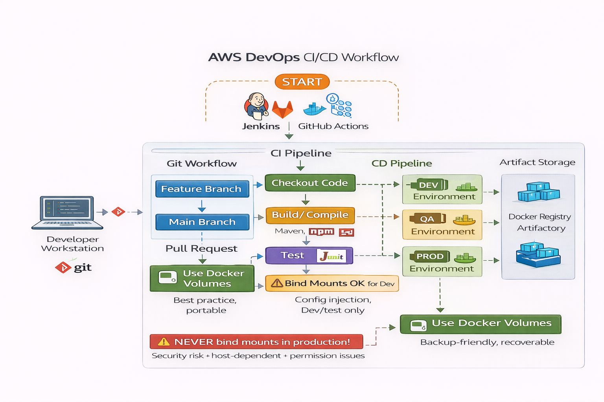

🌍 Real-Life Analogy
Think of CI/CD like a modern car assembly line:
Imagine a Toyota factory. When workers add a new part to the car, they don't wait until the entire car is built to test if it works. Instead, at every station, quality checks happen immediately. If a door doesn't fit properly, they catch it right away - not when the car reaches the showroom!
Similarly, in software development with CI/CD, every time a developer writes new code (adds a "part"), automated systems immediately test it (quality check). If something breaks, the developer knows within minutes, not weeks later when customers complain. This "continuous inspection" ensures the final product (software) works perfectly, just like how Toyota's assembly line produces reliable cars.
📖 Detailed Explanation
In modern software development using Agile methodologies with DevOps practices, developers work in short cycles called sprints. Within each sprint, continuous testing and integration happen throughout the day - not just at the end of a project.
What is it? CI/CD stands for Continuous Integration and Continuous Deployment/Delivery. It's an automated system that builds, tests, and deploys your code changes automatically whenever you make updates.
Why does it matter? Without CI/CD, testing happens manually, taking days or weeks. Bugs discovered late cost 10-100 times more to fix than bugs caught early. CI/CD catches problems within minutes, saving millions in development costs and preventing customer-facing failures.
How does it work? When a developer pushes code to GitHub, webhooks automatically trigger a pipeline. This pipeline checks out the code, compiles it, runs tests, analyzes quality, and packages it - all without human intervention. If any step fails, the developer gets immediate feedback.
🔑 Key Concepts
- Version Control (Git): Like Google Docs' version history for code - tracks every change made
- Local Repository (.git): Storage on your computer that remembers all code versions
- Remote Repository (GitHub): Cloud storage where team shares code - like Dropbox for developers
- Feature Branch: Separate workspace for new features - prevents breaking main code
- Main Branch: The "production-ready" version - always should work perfectly
- Pull Request (PR): Request to merge your code - requires approval from team lead
- Webhooks: Automatic triggers - like motion sensors that start CI/CD pipeline
- CI Pipeline: Automated assembly line for code - builds, tests, and validates
💼 Real-World Scenarios
Scenario 1: Best-Case Implementation ✅
| Aspect | Details |
|---|---|
| Context | E-commerce startup implements CI/CD from day one. Every code push triggers automated testing. |
| Challenge | Developer accidentally introduces bug that could crash payment system during Black Friday sale. |
| Solution | CI pipeline catches bug in 2 minutes. Automated tests fail, preventing merge to main branch. Developer fixes immediately. |
| Outcome | Bug never reaches production. Black Friday sale runs smoothly. Company processes $2M in sales without downtime. Team confidence soars. |
Scenario 2: Worst-Case Scenario ❌
| Aspect | Details |
|---|---|
| Context | Traditional company has no CI/CD. Developers push code directly to production with manual testing once per month. |
| Challenge | Developer pushes code with SQL injection vulnerability. Manual testing misses it because they only test "happy path" scenarios. |
| Solution | None. No automated security scanning. Code goes live Friday evening. Hackers exploit vulnerability over weekend. |
| Outcome | 200,000 customer credit cards stolen. Company faces $15M in fines, lawsuits. Stock drops 40%. CEO resigns. Company never recovers reputation. |
Scenario 3: Edge-Case Scenario ⚠️
| Aspect | Details |
|---|---|
| Context | Company has basic CI/CD with build and unit tests, but no integration tests or code coverage requirements. |
| Challenge | Developer writes code that works in isolation but breaks when integrated with payment service. Unit tests pass, but integration fails. |
| Solution | Bug reaches production because integration tests missing. Customers can't complete purchases for 3 hours on Saturday morning. |
| Outcome | $100K in lost sales. 500 angry customer complaints. Team adds integration tests to CI pipeline. Lesson learned: comprehensive testing prevents expensive outages. |
📊 Scenario Comparison
| Scenario | Use Case | Best Practice Applied | Outcome |
|---|---|---|---|
| Best-Case | E-commerce with complete CI/CD | Automated testing catches bugs instantly | $2M successful sale, zero downtime, happy customers |
| Worst-Case | No automation, manual testing only | None - security vulnerability deployed | $15M fines, data breach, company reputation destroyed |
| Edge-Case | Partial CI/CD without integration tests | Basic testing only, missing comprehensive checks | $100K lost sales, 3-hour outage, lesson learned |
Key Learning: Complete CI/CD implementation prevents catastrophic failures. The cost of setting up proper automation ($10K-50K) is tiny compared to cost of production bugs ($100K-millions).
⚙️ Practical Implementation
Learn how to implement CI/CD using both AWS CLI and AWS Management Console.
Method 1: Using AWS CLI
Prerequisites:
- AWS CLI installed and configured (
aws configure) - IAM permissions: CodeBuild, CodePipeline, S3, CloudWatch
- GitHub repository with application code
- buildspec.yml file in repository root
Step 1: Create buildspec.yml File
# buildspec.yml - Instructions for CI pipeline
version: 0.2
phases:
install:
runtime-versions:
nodejs: 18
pre_build:
commands:
- echo Installing dependencies...
- npm install
build:
commands:
- echo Build started on `date`
- npm run build
- npm test
post_build:
commands:
- echo Build completed on `date`
artifacts:
files:
- '**/*'Explanation: This file tells AWS CodeBuild how to build and test your application automatically.
Step 2: Create CodeBuild Project
aws codebuild create-project \
--name my-nodejs-project \
--source type=GITHUB,location=https://github.com/username/repo.git \
--artifacts type=S3,location=my-build-artifacts-bucket \
--environment type=LINUX_CONTAINER,image=aws/codebuild/standard:7.0,computeType=BUILD_GENERAL1_SMALL \
--service-role arn:aws:iam::123456789012:role/CodeBuildServiceRole \
--region us-east-1Expected output: JSON response with project details including ARN and creation timestamp.
Step 3: Start Build
aws codebuild start-build \
--project-name my-nodejs-project \
--region us-east-1Explanation: Manually triggers build process. In production, webhook triggers this automatically on code push.
Step 4: Check Build Status
aws codebuild batch-get-builds \
--ids my-nodejs-project:build-id-12345 \
--region us-east-1Method 2: Using AWS Management Console (GUI)
- Navigate: Go to AWS Management Console → Developer Tools → CodeBuild
- Create Build Project:
- Click "Create build project" (orange button)
- Project name: my-nodejs-project
- Description: CI pipeline for Node.js application
- Configure Source:
- Source provider: GitHub
- Connect to GitHub using OAuth
- Select repository from dropdown
- Branch: main
- Configure Environment:
- Environment image: Managed image
- Operating system: Ubuntu
- Runtime: Standard
- Image: aws/codebuild/standard:7.0
- Service role: Create new service role
- Configure Buildspec:
- Build specifications: Use a buildspec file
- Buildspec name: buildspec.yml (default)
- Configure Artifacts:
- Type: Amazon S3
- Bucket name: my-build-artifacts-bucket
- Path: builds/
- Artifacts packaging: Zip
- Configure Logs:
- CloudWatch logs: Enabled
- Group name: /aws/codebuild/my-nodejs-project
- Stream name: build-logs
- Create Project: Click "Create build project"
- Start Build:
- Click "Start build" button
- Monitor progress in real-time
- View logs in CloudWatch or directly in console
✅ Success Indicators:
- Build shows "Succeeded" status with green checkmark
- Artifacts uploaded to S3 bucket
- CloudWatch logs show all build phases completed
- Build duration displayed (typically 2-5 minutes)
- All tests passed without errors
✅ Best Practices
| Practice | Why It Matters | How to Implement |
|---|---|---|
| Use feature branches for all changes | Prevents breaking main branch, enables parallel development | git checkout -b feature/user-authentication |
| Write meaningful commit messages | Makes code history searchable and understandable | Use format: "feat: add user login" or "fix: resolve payment bug" |
| Require pull request reviews | Catches bugs before merge, shares knowledge across team | Configure GitHub branch protection rules requiring 2 approvals |
| Implement comprehensive testing | Unit + integration + security tests catch 90% of bugs | Include unit tests, integration tests, and SonarQube scans in pipeline |
| Set minimum code coverage requirements | Ensures code is properly tested before deployment | Configure 80% code coverage threshold in pipeline |
| Automate security scanning | Detects vulnerabilities before hackers exploit them | Add OWASP dependency check and SonarQube to CI pipeline |
| Use semantic versioning for artifacts | Enables rollback to specific versions if needed | Tag builds as v1.2.3 (major.minor.patch format) |
| Monitor build performance | Slow builds reduce developer productivity | Keep builds under 10 minutes, optimize by caching dependencies |
🔀 Decision Flow
Use this decision tree to choose the right CI/CD approach based on your team's maturity level.

Figure 2: CI/CD Decision Tree - Choosing the Right Approach for Your Team
🔧 Troubleshooting
| Issue | Possible Cause | Solution |
|---|---|---|
| Build fails with "Access Denied" | CodeBuild service role lacks S3 permissions | Add S3 GetObject and PutObject permissions to service role |
| Tests pass locally but fail in CI | Environment differences (Node version, dependencies) | Match CI environment to local: use same Node version in buildspec.yml |
| Build takes over 15 minutes | Downloading dependencies every time | Enable S3 caching for node_modules in CodeBuild settings |
| GitHub webhook not triggering builds | Webhook deleted or repository connection broken | Reconnect GitHub in CodeBuild source settings, verify webhook exists |
| Build succeeds but artifacts missing | Wrong artifact path in buildspec.yml | Check artifacts.files section matches actual build output directory |
| SonarQube scan timing out | Large codebase or insufficient compute | Upgrade to BUILD_GENERAL1_MEDIUM or larger instance type |
📊 Visual Architecture

Figure 1: Complete CI/CD Workflow from Development to Deployment
💡 Key Takeaways
- CI/CD catches bugs within minutes, not weeks, saving millions in development costs
- Always use feature branches to prevent breaking main production code
- Require pull request reviews to ensure code quality and share knowledge
- Implement comprehensive testing including unit, integration, and security scans
- Set minimum 80% code coverage to ensure proper testing before deployment
- Automate security scanning to detect vulnerabilities before hackers exploit them
- Monitor build performance and keep builds under 10 minutes for developer productivity
- Use semantic versioning for all artifacts to enable easy rollbacks when needed